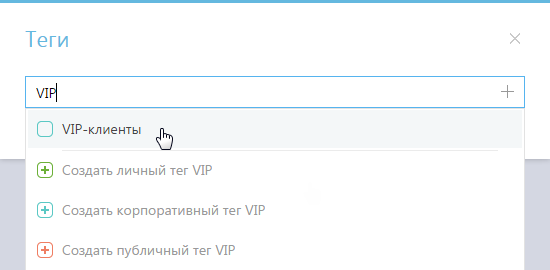
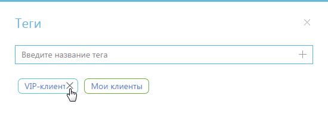
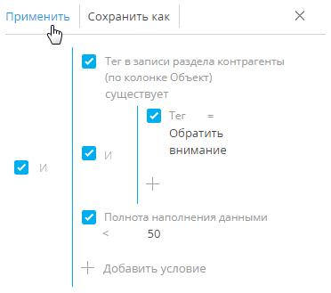

Используйте функциональность тегов для сегментации записей вручную. Например, тегировав записи в разделе Контакты, вы сможете выделить VIP-клиентов или определить черный список клиентов. Решение о тегировании каждой записи принимается индивидуально. Также теги можно использовать для быстрого поиска информации по ключевым словам. Например, с их помощью вы быстро найдете необходимую статью в разделе База знаний.
Одной и той же записи раздела может быть присвоено несколько тегов одновременно. При этом вы можете установить как теги, которые будут отображаться только для вас, так и такие, которые будут доступны всем пользователям Creatio или клиентам на портале самообслуживания.
Личные, корпоративные и публичные теги
Тег или набор тегов может быть присвоен любой записи в Creatio. Тегирование записей выполняется вручную. Добавить тег можно на странице записи, а отфильтровать записи в разделе по тегам — в области фильтрации раздела. Для каждого раздела Creatio используется отдельный перечень тегов.
В Creatio используются следующие виды тегов:
-
Личные — теги, которые может видеть и использовать только тот сотрудник, который их создал. Любой пользователь системы может создать необходимое количество личных тегов. Ни администраторы системы, ни руководители не смогут увидеть личные теги сотрудников. Личные теги в Creatio отображаются зеленым цветом.
-
Корпоративные — теги, которые отображаются для всех сотрудников компании Любой сотрудник может установить или снять корпоративный тег. Создавать новые корпоративные теги могут все сотрудники/роли, которым предоставлено право на операцию “Управление корпоративными тегами”. Корпоративные теги в Creatio отображаются голубым цветом.
-
Публичные — теги, которые отображаются для всех сотрудников компании, а также для пользователей портала самообслуживания. Любой сотрудник может установить или снять публичный тег. Создавать новые публичные теги могут все сотрудники/роли, которым предоставлено право на операцию “Управление публичными тегами”. Публичные теги в Creatio отображаются красным цветом.
Создать тег
-
Откройте запись, которой нужно присвоить новый тег, например, страницу контакта, и нажмите кнопку .
-
В открывшемся окне введите название нового тега, который вы хотите создать. В выпадающем меню отобразятся команды для добавления одного из тех типов тегов, на создание которых у вас есть право. Выберите подходящий тип тега, например, корпоративный (Рис. 1).
В результате в Creatio будет создан новый тег. Также этот тег будет установлен для выбранной записи раздела.
Если тип и название нового корпоративного или публичного тега дублируют тип и название существующего, то новый тег не будет создан. В этом случае выберите для записи раздела существующий тег. Названия личных тегов, созданных разными пользователями, могут совпадать.Названия личных тегов, созданных разными пользователями, могут совпадать.
Тегировать запись
- Откройте запись, которую необходимо тегировать, например, страницу контакта, и нажмите кнопку
 .
. - В открывшемся окне начните вводить название существующего тега, которым вы хотите отметить запись. В выпадающем списке окна отобразятся найденные по совпадению теги. Выберите интересующий тег (Рис. 2).
Рис. 2 — Тегирование записи
В результате контакт будет тегирован.
Чтобы отфильтровать записи раздела по тегам, нажмите кнопку  в области фильтрации. В появившемся поле установите курсор и выберите из списка интересующий тег (Рис. 3). Вы также можете ввести название тега вручную.
в области фильтрации. В появившемся поле установите курсор и выберите из списка интересующий тег (Рис. 3). Вы также можете ввести название тега вручную.
В результате записи в разделе будут отфильтрованы по выбранному тегу.
Снять тег
-
Откройте страницу, для которой необходимо снять тег, например, страницу контакта, и нажмите кнопку .
-
В открывшемся окне выберите тег и нажмите на крестик справа от него (Рис. 4). Тег будет снят для выбранной записи раздела. При этом из списка доступных тегов он удален не будет.
Рис. 4 — Снятие тега
Настроить расширенный фильтр на записи с тегом
Используйте функциональность расширенных фильтров, если вам необходимо применить по отношению к тегированным записям несколько параметров и условий фильтрации.
Для этого:
- В меню Фильтры/группы раздела Контрагенты выберите команду Перейти в расширенный режим.
- В области настройки условий фильтрации выполните настройку следующих условий:
-
Нажмите на ссылку Добавить условие.
-
В открывшемся окне нажмите кнопку
 рядом с наименованием объекта “Контрагент”.
рядом с наименованием объекта “Контрагент”. -
В добавившемся поле выберите объект с обратной связью “Тег в записи раздела контрагенты (по колонке Объект)”.
-
В поле Колонка укажите колонку связанного объекта “Количество”.
-
Замените тип условия “Количество” на “Существует”.
-
Добавьте дополнительное условие “Тег” и выберите тег “Обратить внимание”.
-
Добавьте условие “Полнота наполнения данными”.
-
Выберите тип условия “<” и укажите цифру “50”.
-
- Нажмите кнопку Применить (Рис. 5).
Рис. 5 — Настройка расширенного фильтра на записи с тегом “Обратить внимание”
В результате отобразится список всех контрагентов с тегом “Обратить внимание” и профилем, заполненным информацией менее чем наполовину.
Часто задаваемые вопросы по работе с тегами
Как просмотреть список доступных тегов?
Откройте реестр раздела, для которого вы хотите узнать перечень доступных тегов. В области фильтрации нажмите кнопку . В появившемся поле установите курсор. Появится список всех тегов, доступных вам в данном разделе (Рис. 6).
Администратор системы может отобразить список всех тегов раздела. Для этого создайте в системе справочник, объектом которого будет тег необходимого раздела, например “Тег раздела активности”. В созданном справочнике отобразится весь перечень тегов, существующих в разделе.
Как отредактировать тег?
Отредактировать теги может администратор системы или любой пользователь, у которого есть доступ к разделу Справочники. Для этого создайте в системе справочник, объектом которого будет тег необходимого раздела, например “Тег раздела активности”. В справочнике можно изменить название и тип тега.
Как удалить тег?
Для удаления тегов необходимо иметь доступ к разделу Справочники. Создайте в системе справочник, объектом которого будет тег необходимого раздела, например “Тег раздела активности”. В созданном справочнике найдите тег, который необходимо удалить и нажмите кнопку .